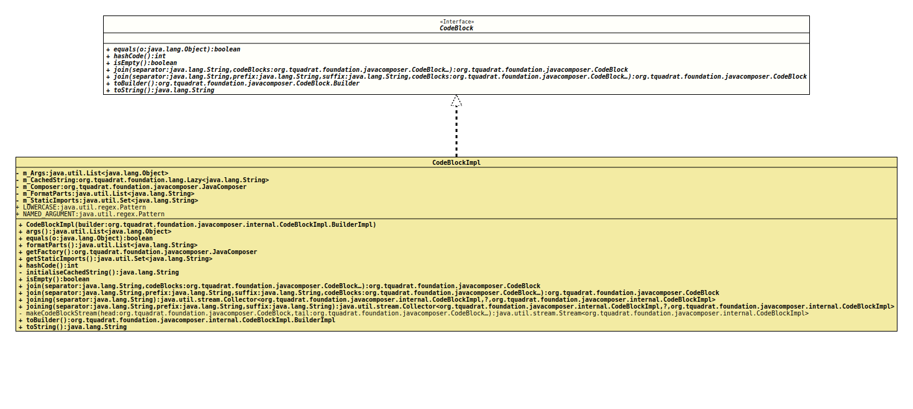

Interface CodeBlock
- All Known Implementing Classes:
CodeBlockImpl
The definition of a fragment for a *.java file,
potentially containing declarations, statements, and documentation. Code
blocks are not necessarily well-formed Java code, and they are not
validated. Implementations of this interface assume that javac will
check correctness later!
Code blocks do support placeholders like
Format.
Where
String.format()
uses percent % to reference target values, this class uses dollar
sign $ and has its own set of permitted placeholders:
$Lemits a literal value with no escaping. Arguments for literals may be strings, primitives, type declarations, annotations and even other code blocks.$Nemits a name, using name collision avoidance where necessary. Arguments for names may be Strings (actually any character sequence), parameters, fields, methods, and types.$Sescapes the value as a String, wraps it with double quotes, and emits that. For example,6" sandwichis emitted"6\" sandwich".$Temits a type reference. Types will be imported if possible. Arguments for types may be classes, type mirrors, and elements.$$emits a dollar sign.$Wemits a space or a newline, depending on its position on the line. This prefers to wrap lines before 100 columns.$Zacts as a zero-width space. This prefers to wrap lines before 100 columns.$>increases the indentation level.$<decreases the indentation level.$[begins a statement. For multi-line statements, every line after the first line is double-indented.$]ends a statement.
- Author:
- Square,Inc.
- Modified by:
- Thomas Thrien (thomas.thrien@tquadrat.org)
- Version:
- $Id: CodeBlock.java 1078 2023-10-19 14:39:47Z tquadrat $
- Since:
- 0.0.5
- UML Diagram
-

UML Diagram for "org.tquadrat.foundation.javacomposer.CodeBlock"
{kind=link}
-
Nested Class Summary
Nested ClassesModifier and TypeInterfaceDescriptionstatic interfaceThe definition of a builder for a new instance of an implementation ofCodeBlock. -
Field Summary
FieldsModifier and TypeFieldDescriptionstatic final CodeBlockDeprecated, for removal: This API element is subject to removal in a future version. -
Method Summary
Modifier and TypeMethodDescriptionstatic CodeBlock.Builderbuilder()Deprecated, for removal: This API element is subject to removal in a future version.Replaced byJavaComposer.codeBlockBuilder()booleaninthashCode()booleanisEmpty()Checks whether this code block is empty.static CodeBlockDeprecated, for removal: This API element is subject to removal in a future version.Replaced byjoin(String, CodeBlock...).static CodeBlockDeprecated, for removal: This API element is subject to removal in a future version.Replaced byjoin(String, String, String, CodeBlock...).Joins this code block with the given code blocks into a single newCodeBlockinstance, each separated by the given separator.Joins this code block with the given code blocks into a single newCodeBlockinstance, each separated by the given separator.static CodeBlockDeprecated, for removal: This API element is subject to removal in a future version.Replaced byJavaComposer.codeBlockOf(String, Object...)static CodeBlockDeprecated, for removal: This API element is subject to removal in a future version.Replaced byJavaComposer.codeBlockOf(String, Object...)Creates a new builder that is initialised with the components of this code block.toString()
-
Field Details
-
EMPTY_CODEBLOCK
@Deprecated(since="0.2.0", forRemoval=true) @API(status=DEPRECATED, since="0.0.5") static final CodeBlock EMPTY_CODEBLOCKDeprecated, for removal: This API element is subject to removal in a future version.UseJavaComposer.emptyCodeBlock()instead.An empty code block.
-
-
Method Details
-
builder
@Deprecated(since="0.2.0", forRemoval=true) @API(status=DEPRECATED, since="0.0.5") static CodeBlock.Builder builder()Deprecated, for removal: This API element is subject to removal in a future version.Replaced byJavaComposer.codeBlockBuilder()Creates a builder for an instance ofCodeBlock.- Returns:
- The new builder.
-
equals
-
hashCode
int hashCode() -
isEmpty
boolean isEmpty()Checks whether this code block is empty.- Returns:
trueif the code block is empty,falseotherwise.
-
join
Joins this code block with the given code blocks into a single new
CodeBlockinstance, each separated by the given separator.For example, joining "
String s", "Object o" and "int i" using "," as the separator would produce "String s, Object o, int i".- Parameters:
separator- The separator.codeBlocks- The code blocks to join with this one.- Returns:
- The new code block.
-
join
@API(status=STABLE, since="0.2.0") CodeBlock join(String separator, String prefix, String suffix, CodeBlock... codeBlocks) Joins this code block with the given code blocks into a single new
CodeBlockinstance, each separated by the given separator. The given prefix will be prepended to the newCodeBloc, and the given suffix will be appended to it.For example, joining "
String s", "Object o" and "int i" using "," as the separator would produce "String s, Object o, int i".- Parameters:
separator- The separator.prefix- The prefix.suffix- The suffix.codeBlocks- The code blocks to join.- Returns:
- The new code block.
-
join
@Deprecated(since="0.2.0", forRemoval=true) @API(status=DEPRECATED, since="0.0.5") static CodeBlock join(Iterable<CodeBlock> codeBlocks, String separator) Deprecated, for removal: This API element is subject to removal in a future version.Replaced byjoin(String, CodeBlock...).Joins the given code blocks into a single
CodeBlockinstance, each separated by the given separator.For example, joining "
String s", "Object o" and "int i" using "," as the separator would produce "String s, Object o, int i".- Parameters:
codeBlocks- The code blocks to join.separator- The separator.- Returns:
- The new code block.
-
join
@Deprecated(since="0.2.0", forRemoval=true) @API(status=DEPRECATED, since="0.0.5") static CodeBlock join(Iterable<CodeBlock> codeBlocks, String separator, String prefix, String suffix) Deprecated, for removal: This API element is subject to removal in a future version.Replaced byjoin(String, String, String, CodeBlock...).Joins the given code blocks into a single
CodeBlockinstance, each separated by the given separator. The given prefix will be prepended to the newCodeBloc, and the given suffix will be appended to it.For example, joining "
String s", "Object o" and "int i" using "," as the separator would produce "String s, Object o, int i".- Parameters:
codeBlocks- The code blocks to join.separator- The separator.prefix- The prefix.suffix- The suffix.- Returns:
- The new code block.
-
of
@Deprecated(since="0.2.0", forRemoval=true) @API(status=DEPRECATED, since="0.0.5") static CodeBlock of(String format, Object... args) Deprecated, for removal: This API element is subject to removal in a future version.Replaced byJavaComposer.codeBlockOf(String, Object...)Creates a newCodeBlockinstance from the given format and arguments.- Parameters:
format- The format.args- The arguments.- Returns:
- The new code block.
-
of
@Deprecated(since="0.2.0", forRemoval=true) @API(status=DEPRECATED, since="0.0.6") static CodeBlock of(boolean addDebugOutput, String format, Object... args) Deprecated, for removal: This API element is subject to removal in a future version.Replaced byJavaComposer.codeBlockOf(String, Object...)Creates a newCodeBlockinstance from the given format and arguments.- Parameters:
addDebugOutput-trueif debug output should be added to the generated code,falseif not.format- The format.args- The arguments.- Returns:
- The new code block.
- Since:
- 0.0.6
-
toBuilder
Creates a new builder that is initialised with the components of this code block.- Returns:
- The new builder.
-
toString
-
JavaComposer.emptyCodeBlock()instead.